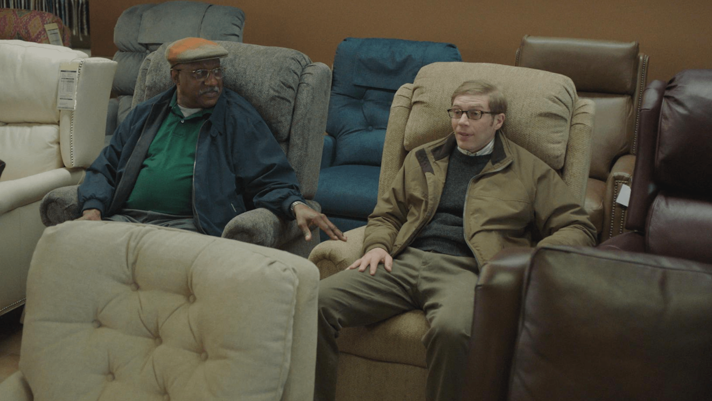
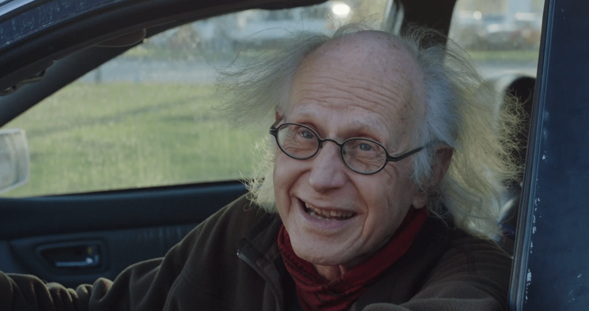

Spoilers warning. What's the significance (if any) of the "Car Guy" interaction in S3:E1?
keywords
reviews2023-06-01
The other day someone asked an interesting question on the r/JoePera subreddit. What is the significance of the odd old man that pulls up in his car while Joe and Gene are eating hot dogs (Season 3, Episode 1)?
I don’t know if there is meant to be any major significance to this interaction, but then again, it’s hard to believe that a producer or writer of a show would just stick something like that in there for no reason at all, considering all of the effort that goes into film making.

Joe tags along with Gene to a furniture store. Gene cannot make up his mind about which chair to choose. While eating hot dogs outside of the store, Gene explains to Joe that since he’s retired, he must pick a chair to sit and unpack his life. It feels like Gene’s life is behind him. That’s when “Car Guy” pulls up (William F. Zarwell), offers some unsolicited advice, and takes a selfie with Joe’s phone. Not only does it catch the viewer off guard, but it also leaves Gene, Joe, and the furniture store employee confused.
His bumper sticker appears to read, “Profound Mystery Forever”, so maybe we will never know the true significance. Car Guy’s advice is essentially that life is unpredictable, and to make the most of it. “Positive vibes only”, he warns. I think his advice is meant to be the focal point, rather than who he is, since Gene barely remembers him (seems like just an old acquaintance).
I think it’s significant that the first episode of the season is about buying a chair, and the final episode is focused on Joe building his own. Joe, throughout the entire season, and even Gene, both feel a bit lost, or challenged by the things going on in their lives.
For Joe, the passing of his Nana was an unexpected life event. He’s left trying to figure out what to do with her house, and with the money from it, while going through the grieving process. I think he’s also conflicted about his relationship with Sarah (Jo Firestone), which has been a bit rocky.
Gene’s source of conflict is less clear. I think he’s trying to figure out what’s the next thing for him. We know from previous episodes that his relationship with his sons has weighed heavy on his mind.

I think the point of the interaction with Car Guy is a friendly reminder that life is unpredictable. That shouldn’t be news to anyone, but every once in a while, we’re surprised, maybe a little confused with what life throws our way, just like Gene and Joe are in this scene.
Soon after the encounter, Gene unexpectedly accepts a new, part-time job at the furniture store.
At the end of S3:E1, Joe mentions that he has 20 chairs in his house, but he did not pick any of them. Joe building a chair and buying a new property seems like he is moving forward in life, and taking charge of it. He’s transformed Nana’s house money into a new place to live someday. He brings the finished chair, along with Sarah, to the piece of land in the final episode.
By S3:E9, Joe says that over time our bodies have changed, causing us to loose the ability to squat. Then he concludes that, “Instead of being sad for what I’ve lost, I should be thankful for what I was given - a big, juicy butt”. Building a chair of his own is symbolic of moving on from the death of Nana. He is no longer comfortable in any of his “chairs”, and realizes that he has the power to choose what to do next.
Similarly, Gene seems to have discovered how to predict the stock market in the final episode. He’s formulating a campaign to run for President of the World. That’s a far-cry from episode 1, when he’s just looking for a nice retirement chair. Even if this seems out of reach, his seems like he’s in a much better place than in episode 1. While watching the coast guard ship go past, he says to Joe, “We were a little lost before, but now we’ve both got our things”.
I like how Gene waves to the ship, since his career was at sea in the Navy or Coast Guard (I don’t remember which).
I am probably just overanalyzing, but my take on the Car Guy interaction is that we don’t know what our lives will be. He looks like Father Time. Maybe he’s the embodiment of life itself, which is, after all, a profound mystery, like his bumper sticker says. To me, Car Guy’s appearance in the first episode serves the purpose of foreshadowing what is to come in the season. He’s a reminder to Joe, Gene, and the audience, that life is unexpected, full of surprises, and something we should make the most of. Try to have a positive view, and it will all be OK.